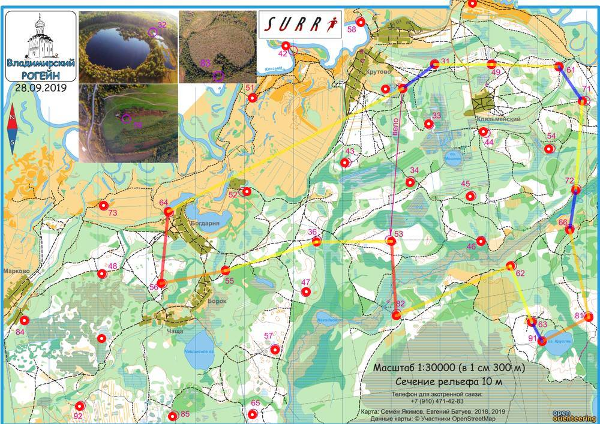

| Команда | Охота на КП |
| Номер | 86 |
| Участники | Лазарева Светлана 1987 |
| Группа | ж |
| Место | 10 |
| Очки | 94 |
| Штраф | 6 |
| Время | 08:05:16 |
| Результат | 88 |
| КП | Время | Сплит | Расстояние, км | Темп, мин/км |
|---|---|---|---|---|
| С | 12:00:00 | |||
| 31 | 12:53:31 | 00:53:31 | 0.808 | 66.3 |
| 49 | 13:03:24 | 00:09:53 | 1.16 | 8.5 |
| 61 | 13:18:40 | 00:15:16 | 1.371 | 11.1 |
| 71 | 20:38:15 | 4591:19:35 | 0.844 | >999 |
| 72 | 14:40:57 | -4590:02:42 | 1.819 | <1 |
| 66 | 15:15:49 | 00:34:52 | 0.823 | 42.4 |
| 81 | 15:38:07 | 00:22:18 | 1.815 | 12.3 |
| 91 | 15:54:33 | 00:16:26 | 1.082 | 15.2 |
| 63 | 20:38:06 | 4588:43:33 | 0.446 | >999 |
| 62 | 16:39:25 | -4588:01:19 | 1.229 | <1 |
| 82 | 17:08:33 | 00:29:08 | 2.535 | 11.5 |
| 53 | 17:37:52 | 00:29:19 | 1.521 | 19.3 |
| 36 | 17:54:28 | 00:16:36 | 1.534 | 10.8 |
| 55 | 18:13:53 | 00:19:25 | 1.957 | 9.9 |
| 56 | 18:33:18 | 00:19:25 | 1.325 | 14.7 |
| 64 | 19:06:24 | 00:33:06 | 1.472 | 22.5 |
| Ф | 20:05:16 | 00:58:52 | 5.404 | 10.9 |
| 08:05:16 | 27.145 км | 20.1 мин/км |
